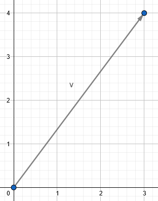
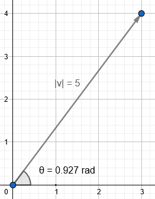
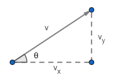
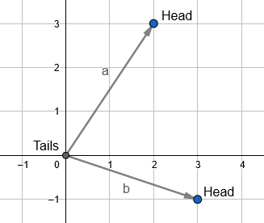
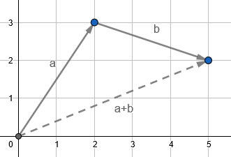
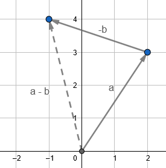
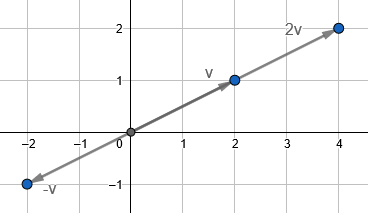

Vectors
To put it broadly, vectors are simply a collection of numbers. In physics, it is also common to think of them as mathematical objects with a direction and a magnitude. They are often visually represented by arrows in cartesian coordinates, where the length of the arrow is the magnitude, and it's direction is just whichever way the arrow happens to point.
I want to make a quick distinction between scalars and vectors. A scalar is just a singular number. It has no direction or dimensionality to it, a scalar is just a number. A vector contains multiple numbers and can not be expressed as a single number.
Introduction
To ground this discussion, let's take the vector \(\vec v = <3,4>\) ("<" and ">" are used to denote a vector, where the numbers inside the alligators are the "components" of the vector). This vector has two components, making it a 2-dimensional vector, and can be drawn as seen below:

The first number indicates the length in the x-direction, and the second indicates length in the y-direction. Below are the equations used to get the magnitude and direction: \[ |\vec{v}|=\sqrt{v_x^2+v_y^2} \] \[ \theta =\arctan({v_y \over v_x}) \]
Here \( |\vec{v}| \) and \( \theta \) is the magnitude and direction (being the angle from the +x-axis) respectively. The magnitude (also sometimes called the "norm") is always a positive quantity and represents the length of the vector (the formula above is derived from the Pythagorean theorem). The angle theta is derived from \( \tan{\theta}= {v_y \over v_x} \) and is typically measured in radians (check whether your calculator is outputting degrees or radians as this could give you completely different numbers). You have to be careful with the arctan function. Most calculators only output on the range of \(-{\pi \over 2} \) to \(\pi \over 2\) (being quadrants I and IV for cartesian coordinates. If your vector lies in quadrants II and III, you will have to add or subtract \(\pi\) to get the correct angle (it helps to try and visualize where your vector is pointing and make sure that the angle you get out the calculator makes sense).
For our example vector, \( |\vec{v}|=5 \) and \( \theta \approx 0.927 \) radians. The angle \( \theta \) is counterclockwise from the +x-axis (if theta happens to be negative, you go clockwise).

Vectors also exist in higher dimensions. You can have an N-dimensional vector if you wanted (where N can be any positive integer). In physics, 2, 3, and 4 dimensions are most common. The idea of direction gets much more complicated and isn't really important (often you are working with just the components). The equation for magnitude stays roughly the same: \[ |\vec{v}|=\sqrt{v_1^2+v_2^2+v_3^2+...+v_n^2} \]
Where n is the number of components, and \( v_i \) refers to the ith component of that vector (i.e. \(v_1\) refers to the first component, \(v_2\) the second component, and so on). Using the the previous vector <3,4> as an example, \(v_1=v_x=3\) and \(v_2=v_y=4\).
Getting Components From Magnitude and Direction
We can also work backwards and get the individual components of a vector given the magnitude and direction using some trig:
\[ \cos{\theta}={v_x \over |\vec{v}|} \Rightarrow v_x = |\vec{v}|\cos{\theta} \] \[ \sin{\theta}={v_y \over |\vec{v}|} \Rightarrow v_y = |\vec{v}|\sin{\theta} \]
Given \(|\vec{v}|=5 \) and \( \theta = 0.927 \), we can determine that \(v_x = 5\cos(0.927) \approx 3 \) and \(v_y = 5\sin(0.927) \approx 4 \), which matches our original components <3,4>.
Vector Notation
I've already used some notation, but I wanted to give a more organized synopsis of it here. There are a few ways to write vectors:
- Ordered set notation: \( \vec{v} = \lt v_1, v_2, ..., v_n \gt \) or \( (v_1, v_2, ..., v_n)\)
- Unit vector notation: \( \vec{v} = v_x\hat{\imath} + v_y\hat{\jmath} + v_z\hat{k} \)
- Where \(\hat{\imath} = (1,0,0), \ \hat{\jmath} = (0,1,0) \), and \( \hat{k} = (0,0,1) \)
Unit vector notation uses what are called unit vectors, which are vectors that have a magnitude of 1. The vectors \(\hat{\imath}, \ \hat{\jmath} \), and \( \hat{k} \) (pronounced i hat, j hat, and k hat, because they're wearing little hats) point in the +x, +y, and +z direction respectively. With unit vector notation, you stretch each unit vector and then sum them to create your vector \( \vec{v} \). This will make more sense once you've read the section on vector math.
Vector Math
When peforming operations on vectors, you typically just work with the components instead of the direction and magnitude.
Operations:
- Addition: \(\vec{a}+\vec{b} = \lt a_1+b_1, \ a_2+b_2, ... , \ a_n+b_n \gt \)
- Subtraction: \(\vec{a}-\vec{b} = \lt a_1-b_1, \ a_2-b_2, ... , \ a_n-b_n \gt \)
- Scalar Multipication: \(r\vec{a} = \lt ra_1, \ ra_2, ..., \ ra_n \gt\), for any scalar r
- Dot Product: \( \vec{a} \cdot \vec{b} = a_1*b_1 + a_2*b_2 + ... + a_n*b_n \)
- Cross Product: \( \vec{a} \times \vec{b} = \lt a_y*b_z-a_z*b_y, -(a_x*b_z-a_z*b_x), a_x*b_y-a_y*b_x \gt\)
Addition, Subtraction, and Scaling
Addition can be visualized using the head-to-tail method of addition. Say you have two vectors \(\vec{a}\) and \(\vec{b}\). In order to add them (\(\vec{a} + \vec{b}\)), you would take the bottom of \(\vec{b}\) (the tail of \(\vec{b}\)), and place it at the head of \(\vec{a}\) (where the arrow is). Now draw a new arrow from the tail of \(\vec{a}\), to the head of \(\vec{b}\). This is vector is the sum of \(\vec{a}\) and \(\vec{b}\). Subtraction is very similar, just flip the direction of \(\vec{b}\) (head becomes tail and tail becomes head) before doing the head-to-tail method.
  
Scalar multiplication can be seen as "stretching" a vector. Multiplying a vector by 2 will make the arrow twice as long, while multiplying by 1/2 will make it half as long. Multiplying by a negative number flips the direction of the arrow.

Dot and Cross Product
The dot product and cross product are two vector-specific operations. The dot product (also referred to as the "inner" product or "scalar" product) results in a scalar. In contrast, the cross product outputs a vector. The following equations can be useful when working with these operations:
- \(\vec{a} \cdot \vec{b} = |\vec{a}||\vec{b}|\cos{\theta} \)
- \(|\vec{a} \times \vec{b}| = |\vec{a}||\vec{b}|\sin{\theta} \)
**\(\theta\) is the angle between the two vectors
What is interesting about the cross product is that the vector it creates is orthogonal (perpendicular) to the two original vectors. The direction of this new vector can be determined using the right-hand rule. To find the direction of \( \vec{a} \times \vec{b} \), take your right hand, point your index finger in the direction of \(\vec{a}\), your middle finger in the direction of \(\vec{b}\), and then stick your thumb out (you can ignore the rest of your fingers). Your thumb represents the direction of the new vector.

It is important to note that the cross product only works in three dimensions. In contrast, the dot product can be used for any number of dimensions.
Unit Vectors
Unit vectors are vectors with a magnitude of 1. I've already introduced the vectors \(\hat{\imath}, \ \hat{\jmath} \), and \( \hat{k} \), which point in the +x, +y, and +z direction. We can also write them in terms of their components: \(\hat{\imath} = (1,0,0)\), \(\hat{\jmath} = (0,1,0)\), & \(\hat{k} = (0,0,1)\)
Beyond these special unit vectors, you can get the unit vector of any given vector using the formula below: \[ \hat{v}= {\vec{v} \over |\vec{v}|} \]
The hat symbol above our vector just indicates that it's a unit vector. The operation of dividing a vector just involves dividing each of the components by that value (same as multiplying the vector by the reciprocal). \(\hat{v}\) points in the direction of \(\vec{v}\), but has a magnitude of 1.